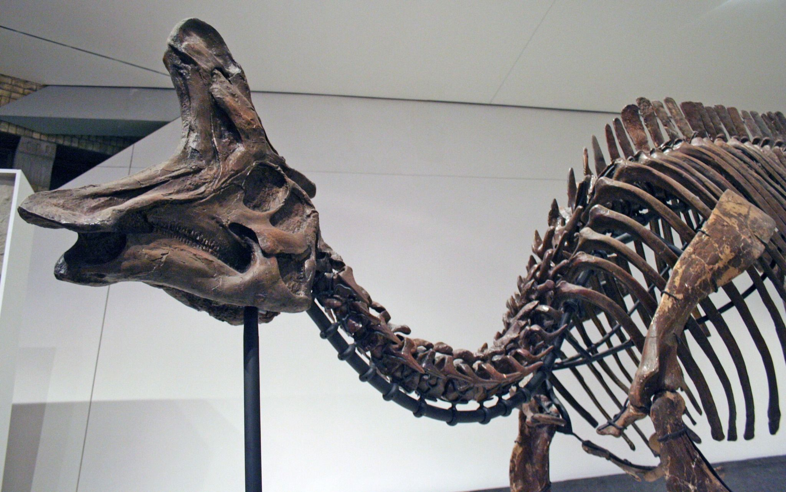

O dinossauro que levava a moda na cabeça: Lambeosaurus
Ora, ora, quem temos aqui? Eu sou o Super 8 — seu arqueólogo de sofá favorito — e hoje vamos viajar 75 milhões de anos no tempo... direto pra um mundo onde existia um dinossauro que desfilava com a crista mais estilosa do Cretáceo! O Lambeosaurus — ou como gosto de chamar, o “influencer cretáceo da cabeçona oca” — foi um hadrossaurídeo (grupo dos patudos comedor de planta) que desfilava pelos antigos campos do Canadá. Sua marca registrada? Uma crista craniana oca em forma de... luva. Isso mesmo, o cara era literalmente cabeça de luva! Alguns cientistas acham que ele usava isso pra emitir sons, outros acham que era só pra chamar atenção mesmo. Vai saber! A treta começa com a taxonomia (aquela bagunça básica de dar nome pros bichos extintos). Teve tanto juvenil sendo confundido com dino novo que parecia reunião de família: "Esse aqui é primo do outro ou filho do terceiro?" O gênero foi batizado com muito glamour em 1923 por William Parks, mas os créditos vão pra Lawrence Lambe — o cara que tropeçou nos ossos originais lá em 1902. Um verdadeiro achado de sorte! Hoje, só duas espécies canadenses do Lambeosaurus continuam no jogo. As outras foram pro limbo taxonômico, canceladas sem direito a reality show. Triste, né? Mas a ciência é assim: um dia você é estrela, no outro ninguém lembra do seu nome. E aí, será que se o Lambeosaurus vivesse hoje ele teria um canal no YouTube chamado "CristaCast"? Ou seria só mais um influencer vendendo colágeno jurássico no Instagram?